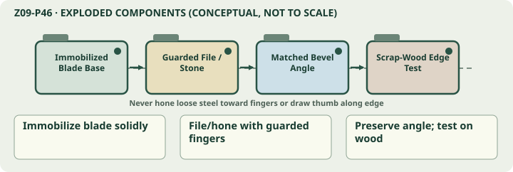

Z09-P46 · Tools and construction · New manuscript
Secure and hone dull knife and axe bevels without finger exposure
Restore a clean working cutting edge safely while keeping fingers protected and preserving factory bevel geometry.
When it applies · Routine camp or home maintenance of dull (not chipped or cracked) knife blades and axe bits.
Equipment · Fine honing stone or bastard file with handle and knuckle guard, secure clamping/base and wipe cloth.

Actions
- Secure an axe or heavy tool firmly against a stable bench or pegged wood support before filing, using a file fitted with both a handle and knuckle guard—never file loose handheld steel toward your fingers.[K04, K02]
- Match the factory bevel angle steadily along a flat sharpening stone or puck with smooth light strokes rather than grinding steep blunt edges or overheating steel on dry power grinders (which ruins temper).[K04]
- Wipe metal filings cleanly away from food areas and fingers, test sharpness safely on a small scrap of paper or dry wood—NEVER draw a thumb lengthwise along a blade edge.[K04, K02, ED]
Failure recognition · Trying to sharpen a hatchet held loosely between knees with an unguarded bare-tang file, slicing deeply into the palm.[K04, K02]
Verify · Confirm firm workpiece immobilization, protected fingers, preserved smooth bevel angle and clean safe testing on scrap material.[K04, K02, ED]
Stop or change course · Stop field honing if the blade shows deep structural cracks, heat-blued soft spots or large jagged chips—retire or professionally regrind damaged steel.[K04, K02]
Evidence and editorial notes
- K02 · OSHA · Hand and Power Tools (OSHA 3080) (agency PDF)
- Section: Hand Tools > Knives, Chisels, Impact and Wrenches · Conditions: Manual cutting, striking and prying operations
Support: Direct cutting blades away from the body and bystanders, never use cracked wooden handles or mushroomed striking heads, and do not substitute wrenches or blades as pry bars.
Limitations: Does not specify material tensile ratings for improvised handles. · Conflicting evidence: None; directly informs safe cutting and impact-tool failure cards.
Editorial note: Prevents blade slip, splintered-handle and spalling-metal injuries. · Specialist reviewer: Tool safety and wilderness medicine
Primary source · checked 2026-11-24
Current assessment · A04-K02 (2026-11-25) · Open: support partial or missing (A04): Supports misuse and defective equipment limits in occupational work. Exact cutting lane and equipment guidance varies by tool kept under specialist review. Limits: Specialist review PENDING (Tool safety and wilderness medicine); publication HOLD. All release decisions pending. - K04 · USDA Forest Service · Handtools for Trail Work (0523-2810-MTDC) (agency handbook)
- Section: Sharpening, Filing and Handle Maintenance · Conditions: Maintaining cutting edges and wood tool handles in field or shop
Support: Secure the tool firmly before filing or honing, keep fingers behind file guards, preserve factory bevel geometry without overheating steel and replace loose or cracked handles rather than taping them.
Limitations: Field touch-up honing does not correct chipped, cracked or heat-annealed steel blades. · Conflicting evidence: None; separates routine edge maintenance from unsafe handle patching.
Editorial note: Guides sharpening, rust prevention and handle-failure retirement cards. · Specialist reviewer: Tool maintenance and forestry safety
Primary source · checked 2026-11-24
Source lineage · USFS handtool sharpening and OSHA 3080; new manuscript · Classification · New manuscript.